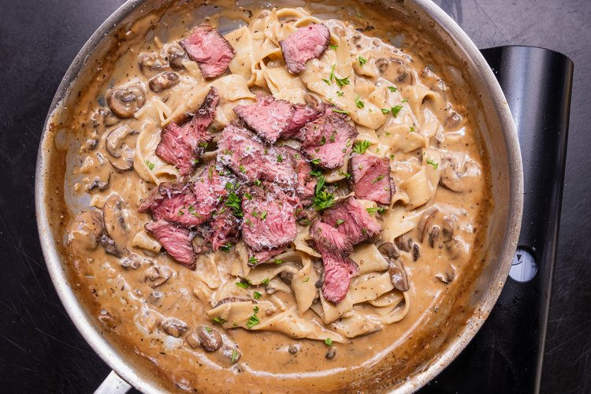

Steak and Creamy Mushroom Pasta but dairy free

DAIRY FREE PASTA
How is that even possible you might ask? Well. You're about to find out. Delicous and the added benefit of not having to change your jorts!
WHAT YOU NEED TO COOK THE STEAK, YO!
- 2 pound Chuck Steak
- Neutral Oil
- 3 tablespoons granulated onion
- 2 tablespoons granulated garlic
- 2 tablespoons coarsly ground black pepper
- 1 tablespoon cayenne pepper
- 1 tablespoon coriander
- 1 tablespoon brown sugar
WHAT YOU DO TO COOK THE STEAK, YO!
- Combine seasoning ingredients, and mix well to combine
- Remove steak from fridge, and dry well with paper towels
- Oil lightly, then season liberally with the mixture and let sit 15-20 minutes
- Set grill up for 2 zone cooking: one side set on high, the other side set on low - close lid and preheat 10 minutes
- Cook steak on the direct side about 2 1/2 minutes, then turn 45 degrees and cook another 2 1/2 - or until nicely charred - flip and repeat
- Move to the indirect side, and continue cooking until the steak is where you like it - an instant read thermometer will get you there without guessing
- Remove from the grill, cover loosley with foil and let rest for 10-15 minutes
WHAT YOU NEED FOR THE PASTA, YO!
- Neutral Oil
- 10 ounces of cremini mushrooms, sliced
- 4 cloves garlic, minced
- 2-3 tablespoons vermouth
- 1 can condensed mushroom soup
- 1/2-3/4 almond milk
- 2 tablespoons soy sauce
- Kosher salt and pepper
- 3/4 pound cooked pasta, tagliatelle is perfect
- 1/4 cup vegan parmesan
- Parsley for garnish
WHAT YOU DOTO THE PASTA, YO!
- Heat a large pan, add about a tablespoon of the oil and the mushrooms - cook about 10 minutes until the mushrooms release their moisture, it evaporates as they start to brown
- Put in a teaspoon more oil, the the garlic and stir until fragrant
- Add the vermouth after a minute, wait until it's mostly evaporated
- Add the mushroom soup, milk and soy - stir well and season to taste with salt and pepper
- Add the drained pasta and parmesan - toss with the sauce, adding some reserved past water iff needed to thin out
- Plate, top with a little more Parmesan, parsley and sliced steak
- ENOY! If you don't get someone to marry you after this one, then ya done goofed.